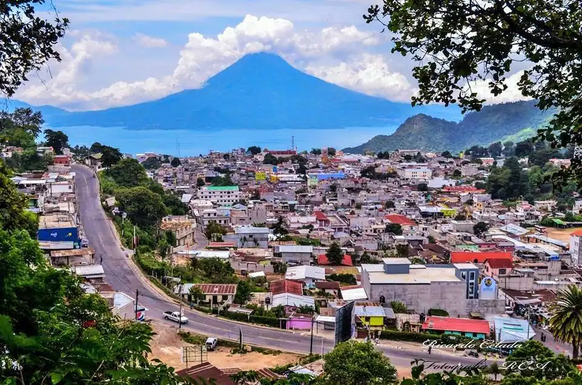

Departamento de Sololá
Sololá
se caracteriza por su rica cultura maya, hermosos paisajes alrededor del Lago de Atitlán y la producción agrícola diversificada. Su ubicación geográfica en la sierra, con clima templado, favorece el cultivo de café, cebolla, zanahoria, maíz, frijol y frutas como el durazno y jocote. La ciudad de Sololá es conocida por su feria titular en agosto y por la influencia de las etnias Tz'utujil, K'iche' y Kakchiquel en su cultura.
Ubicación:
Se encuentra en el altiplano occidental de Guatemala, a orillas del Lago de Atitlán.
Conoce estos lugares que te recomendamos visitar en Sololá:

San Pedro la Laguna
San Pedro La Laguna es un hermoso lugar para visitar debido a que también cuenta con una vista inolvidable llena de colores y el hermoso lago al fondo.
San Lucas Tolimán
Este es un municipio del departamento de Sololá que se encuentra en la región sur occidente de la República de Guatemala. San Lucas Tolimán está localizado a orillas del Lago de Atitlán y en las faldas del Volcán Tolimán. En este lugar puedes observar lindos paisajes por su ubicación y también realizar actividades extremas como escalar el volcán, senderismo y nadar a orillas del Lago.
Mirador Kaqasiiwaan
El Mirador Kaqasiiwaan en San Juan La Laguna es un lugar impresionante que ofrece una de las vistas más espectaculares. Desde allí se puede apreciar una panorámica de 360 grados del Lago de Atitlán, los pueblos aledaños y los volcanes San Pedro, Atitlán y Tolimán.
Mirador Rostro Maya
Este hermoso mirador se encuentra en San Juan La Laguna y es uno de los más hermosos que existen en el país. Además del espectacular panorama que podrás observar desde este punto del lago de Atitlán, también se puede ver un rostro que parece una persona que estuviera acostada.
Reserva Natural Atitlán
Puedes disfrutar de la increíble vista y los espectaculares volcanes que rodean al Lago Atitlán. Los cables, el mariposario, los senderos, los puentes colgantes y los alojamientos de la reserva te acercan a la naturaleza. En el Mariposario observarás los colores y formas de cientos de mariposas, rodeado de flores y el sonido de las aguas.
❮ ❯